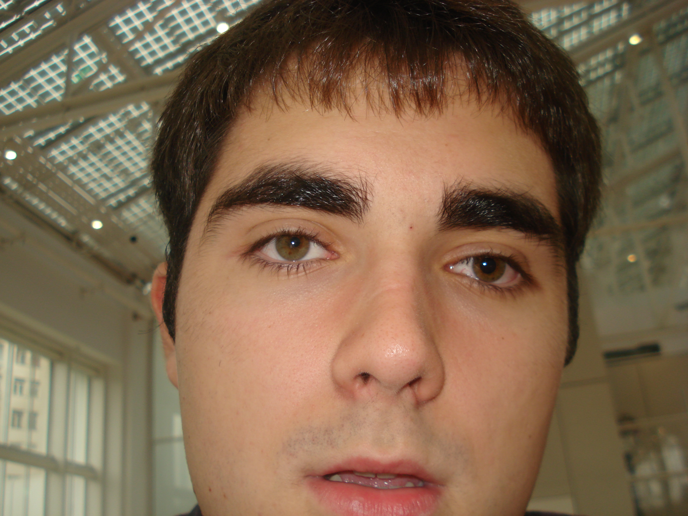

Добро пожаловать на мой сайт
Меня зовут Кузнецов Даниил Дмитриевич и я начинающий специалист по веб-разработке.
Фронтэнд
Фронтенд (или клиентская часть) - это то, что видит пользователь. Он включает в себя все визуальные элементы веб-сайта или приложения: кнопки, формы, изображения и текст. Фронтенд разработчики используют языки разметки и стилизации, такие как HTML, CSS и JavaScript, чтобы создавать интерактивные и привлекательные интерфейсы. Основная задача фронтенда - обеспечить удобство использования и эстетическую привлекательность.
Бэкенд
Бэкенд разработчики используют языки программирования, такие как Python, Ruby, Java или PHP, а также фреймворки и базы данных для создания логики приложения. Основная задача бэкенда - обеспечить стабильную работу приложения и безопасность данных.